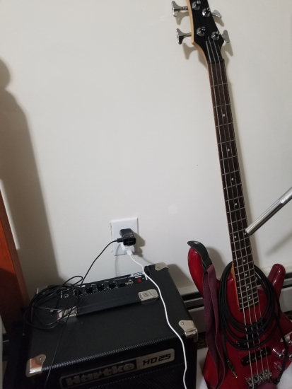
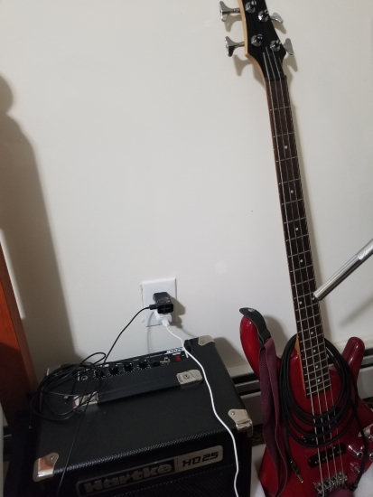

Previous days to all this disaster I was walking to my home and I found this huge teddy bear in the garbage. I found it funny at first, but at the same time while I started to walk again, I started to think about what was coming to this country. I felt fear, I felt confused, I was worried about my family and people I love.

I think this picture reflects people desperation in these times. Even though, it seems funny and maybe stupid, I do not blame those people, I think we all go crazy at least once in life.
The last day I found this little bird really close to my bedroom's windon, I decided to take a picture of him. It was a surprise for me than he did not fly away.
This is what I always see every time I get out from work, empty streets during night, sometimes it feels like all this emptiness gets inside you. It is also interesting to be able to hear your own steps in one of the most importnat cities of the US and the world.

I think these three peictures represent the emptyness of New York, the picture on the left it's a place where you normally see a lot of people getting to their homes at that time from their jobs, but that day there was no one in the street. The picture on the right it's a picture of the Queens Blv, I was getting out my job that day, it was interesting for me to see this Blv. with really few behicules. The picture at the center, I was going back to my home from work and again I was the only person walking on the street, I took out my phone and decided to take a picture in black and white.

The other day, I was looking for one document from college and while I was looking for it, I found this old drawings I used to do when I was in High School. I stop for a while and I started remembering those days, I've always liked to make these kind of graffiti-looking drawings.
After I found these old drawings I decided to do one more. This is the latest drawing or graffiti I've done, I finish it like three weeks ago. Sometimes, I whish I could have more free time to make more of these drawings, but ironically, this quarantine is when the least free time I have, sometimes I spend the whole day in front of my computer attending to different classes and doing homework from different classes, and I also have a job.
I've been working on this one recently, it's not finished yet. In case you're wondering what it means, it means, "schweigen" which is a german word that means, "silence".
 

When I have some free time I use to try to learn to play these two instruments, but again, they require a lot of time. Hopefully, one day I will learn to play them to the fullest. Right now I'm better at the bass, I know how to play some of my favorite songs with the bass.